Simulation illustration gallery
Review all 15 illustrations here. The recorded demo selects plant images using the current crop stage, ridge state and executed events. This gallery shows the complete asset set for review, independently of the replay cursor.
Actual numeric values, survey coverage and timestamps remain those of the recorded tool results. These generated pixels are illustrative; they do not replace the per-ridge data map or add measurements.
NDVI simulation examples
3 images · Event-specific spatial illustrations
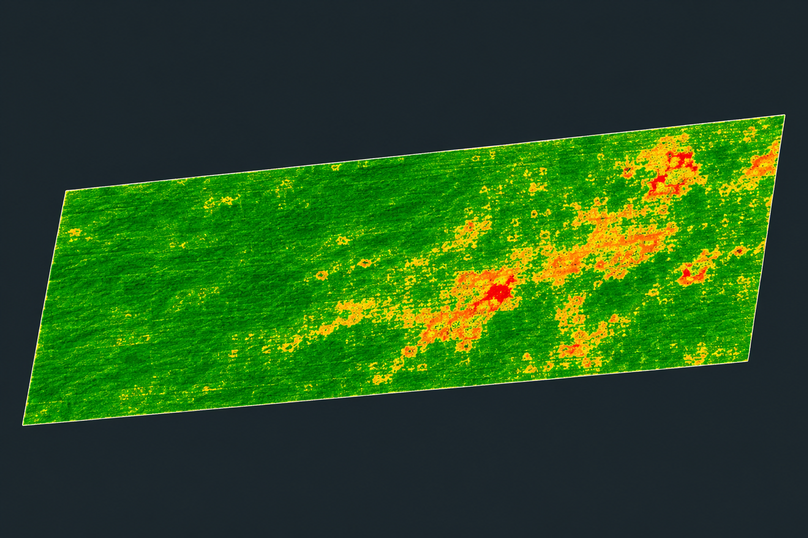
Soybean · Before treatment
Synthetic NDVI-style texture for the disease survey. Only ridges 20–39 have recorded survey values; generated pixels add no measured coverage.
Open original PNG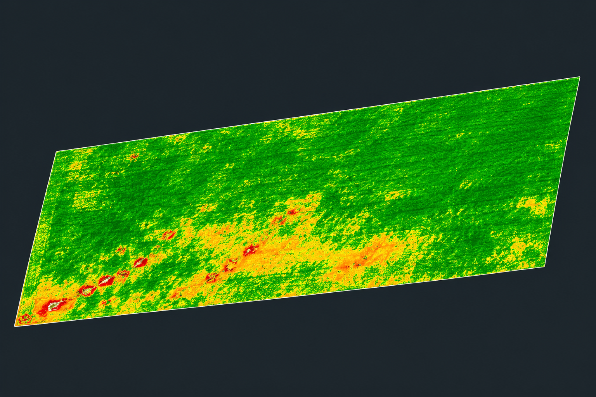
Maize · Before first irrigation
Synthetic NDVI-style texture for the first water-stress survey. Colors are illustrative and are not calibrated measurements.
Open original PNG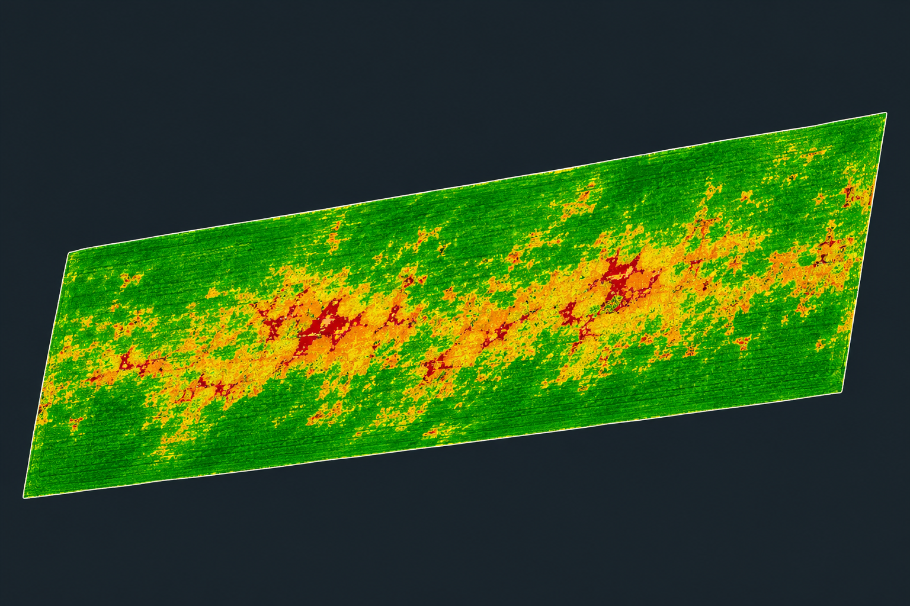
Maize · Before second irrigation
Synthetic NDVI-style texture for persistent water stress. This is not a captured follow-up image or a measured treatment comparison.
Open original PNGSoybean plant illustrations
6 images · farm plot A
Seedling
A generic early-growth reference. The demo keeps unplanted and pre-emergence states in the state schematic.
Open original PNGVegetative growth
Trifoliate leaves and branching illustrate vegetative form. The image does not assert that every ridge is healthy.
Open original PNG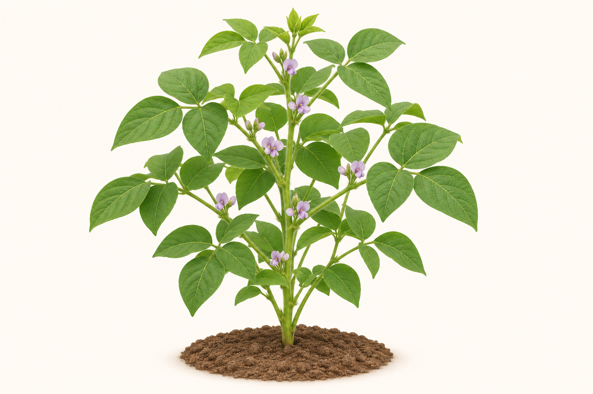
Flowering
A flowering-stage reference. It is not used for the later R3 early-pod or R5 seed-filling stages.
Open original PNG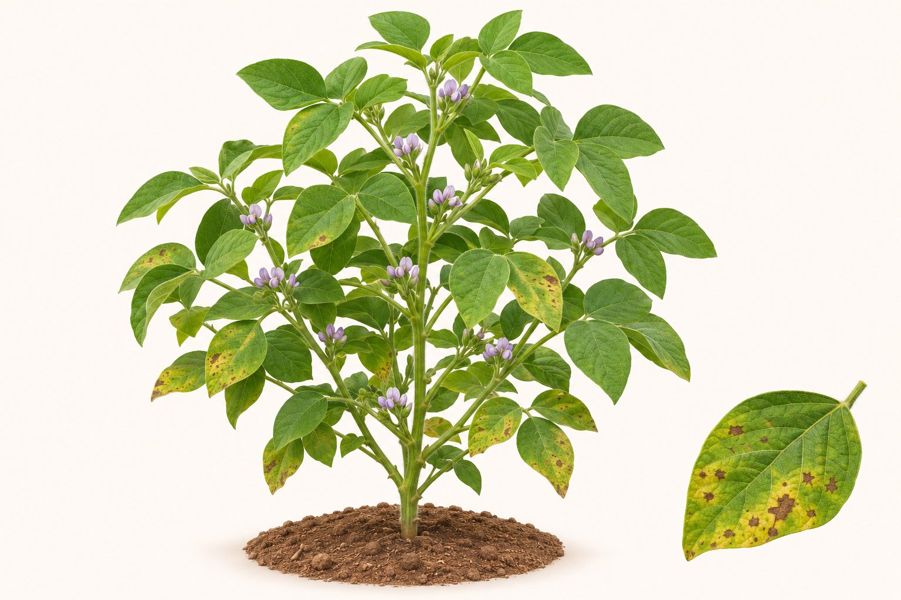
Disease context
Generic leaf spotting illustrates the selected disease context on matching target ridges. Neither pathogen identity nor measured lesion severity is implied.
Open original PNG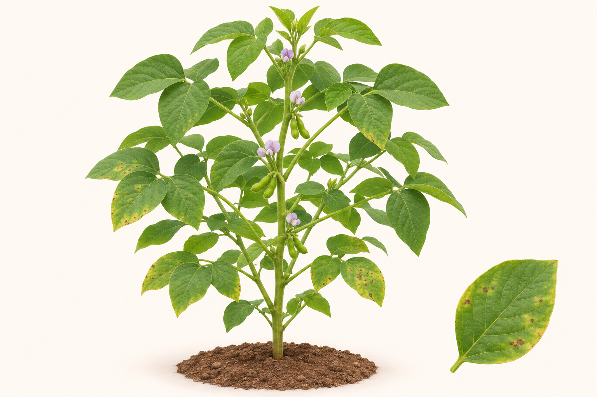
Seven-day follow-up
Early pods and residual marks illustrate a follow-up. The demo requires the selected ridge’s treatment and later qualifying health check; this image does not establish a cure.
Open original PNG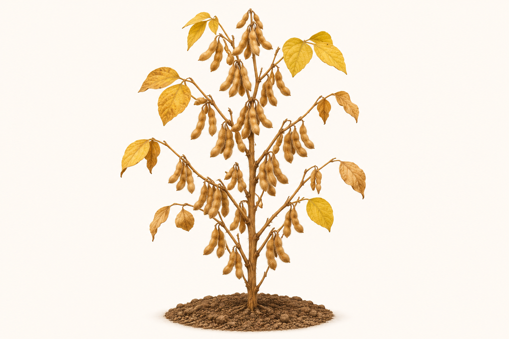
Maturity
Late-season color and mature pods illustrate the recorded maturity stage. A harvested ridge uses the stubble schematic instead.
Open original PNGMaize plant illustrations
6 images · farm plot B
Seedling
A small maize plant illustrates early growth. It is not shown for an unplanted or pre-emergence ridge.
Open original PNGVegetative growth
Leaf and stalk form illustrate vegetative growth. Tasseling and unsupported stages retain the state schematic.
Open original PNG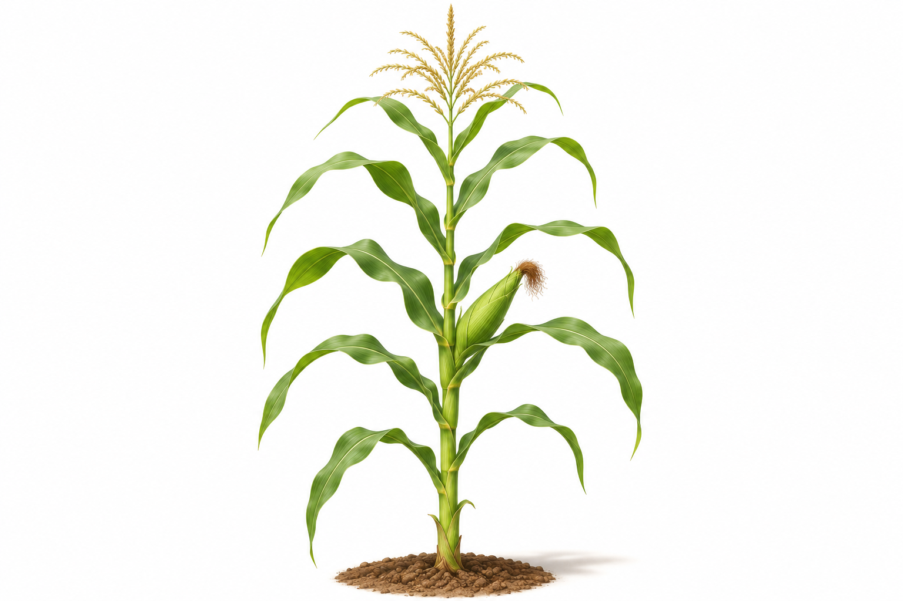
Early reproductive growth
A generic early reproductive reference. It does not imply a mature ear or absence of water stress.
Open original PNG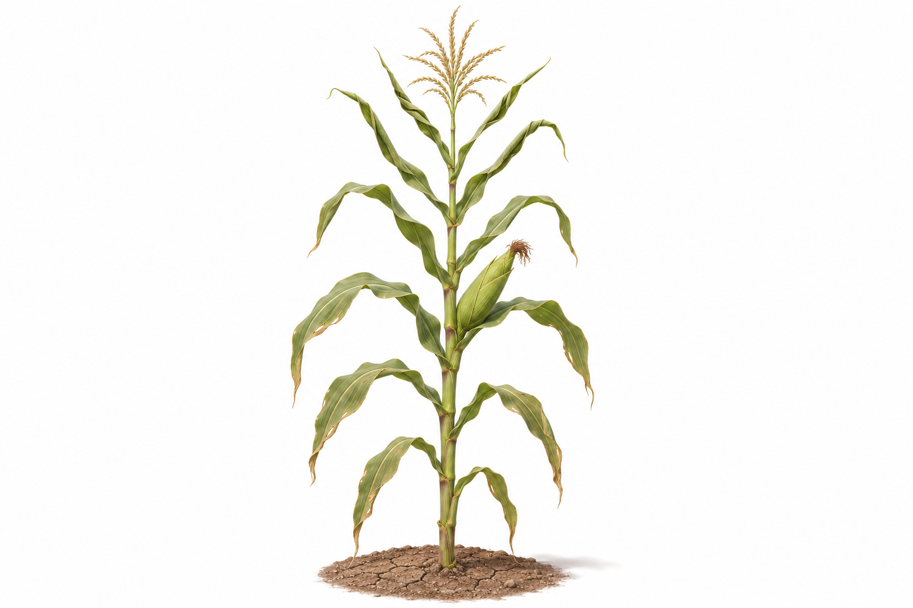
Water-stress context
Rolled, drooping leaves illustrate the recorded drought-survey context on matching target ridges. The drawing is not a thermal raster or measured wilt score.
Open original PNG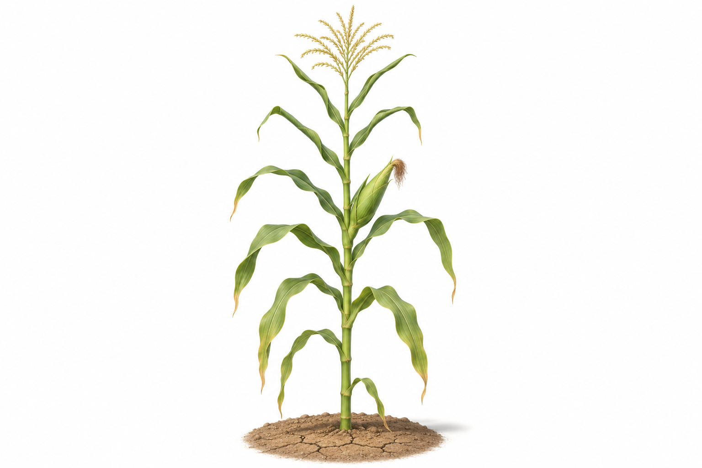
Water follow-up
Residual leaf rolling remains. The demo requires the corresponding irrigation and later soil/crop checks; the image does not imply full recovery.
Open original PNG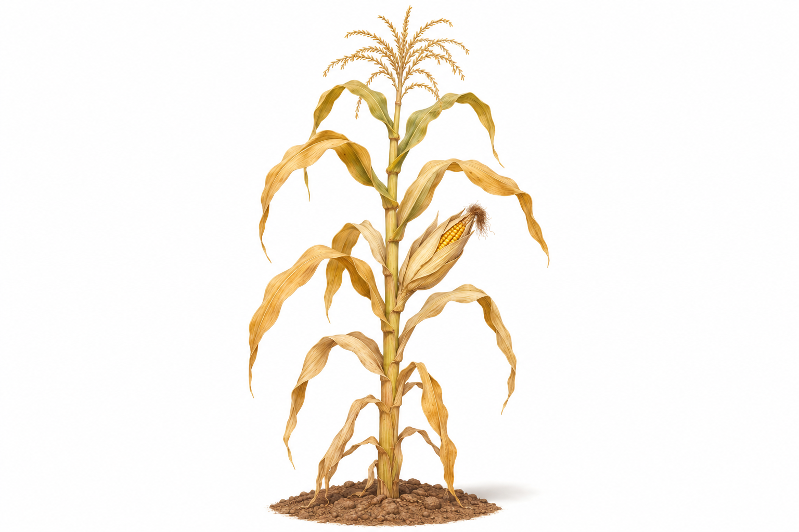
Maturity
Mature maize illustrates the recorded R6 stage. R5 dent and harvested states keep their appropriate state schematics.
Open original PNGClick any image to open its original PNG. All images are bundled locally. Follow-up illustrations retain residual stress or marks and are not proof of treatment efficacy.